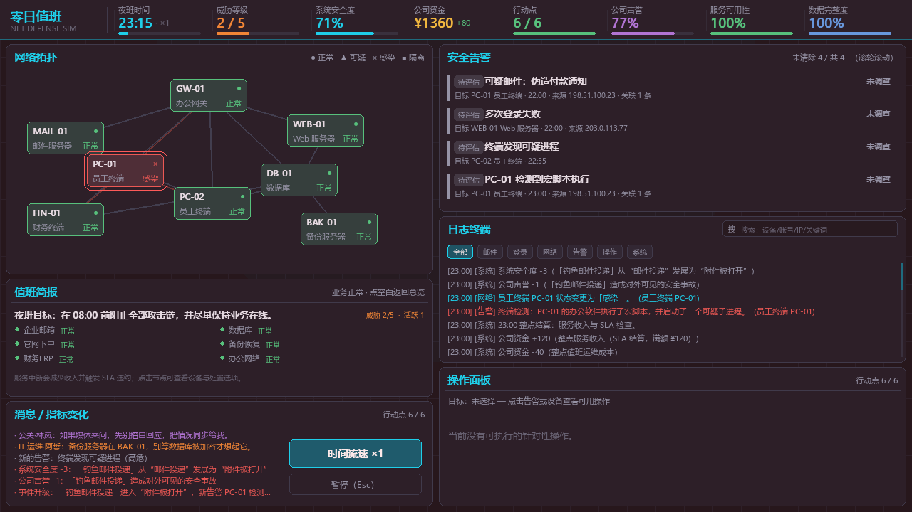
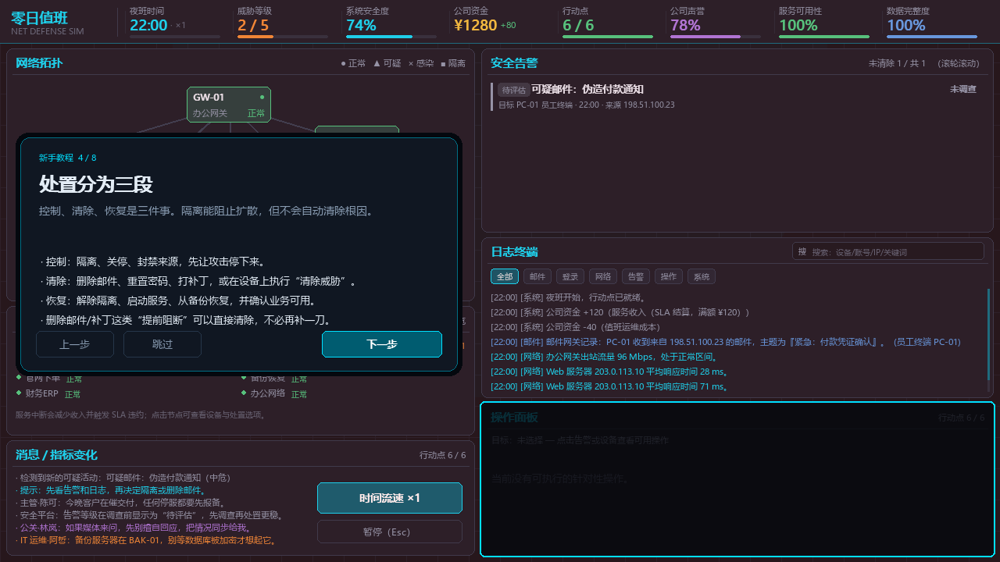
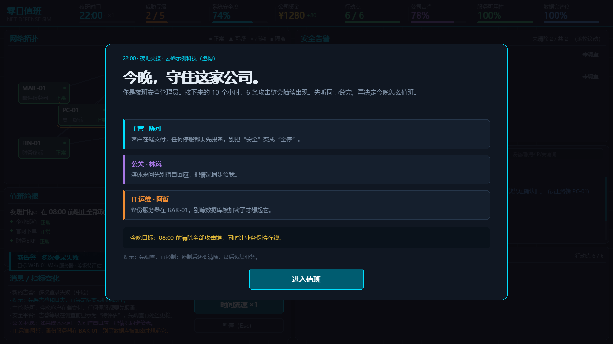
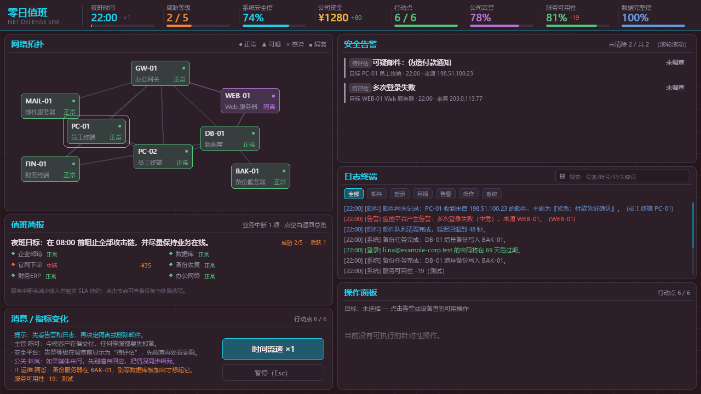
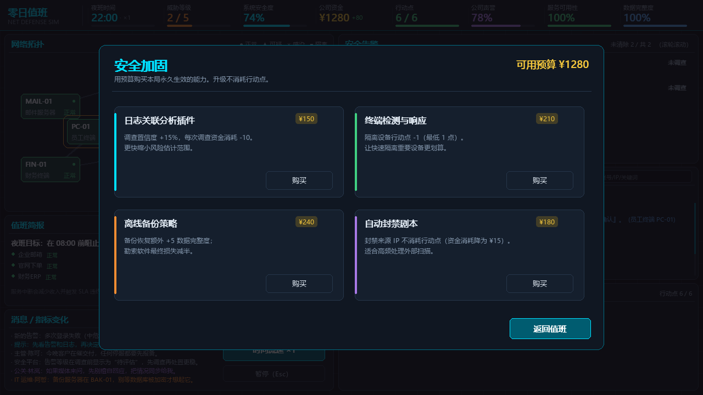
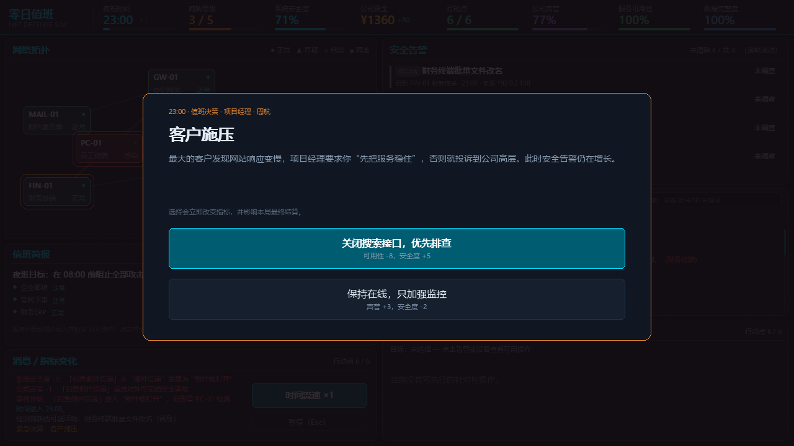
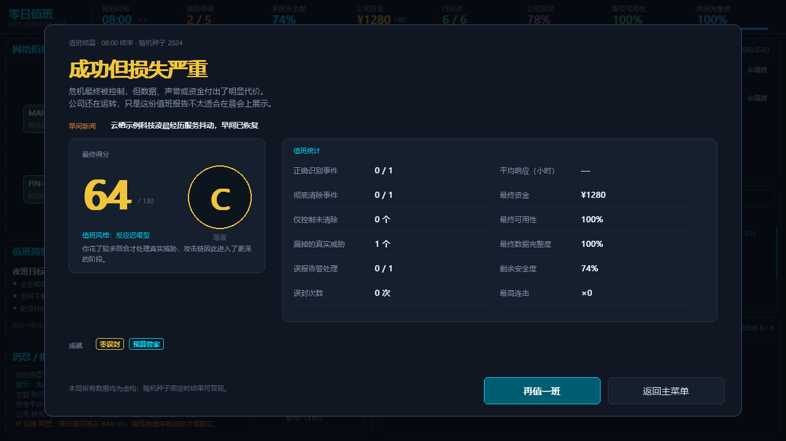

6 条攻击链
钓鱼邮件、异常登录、模拟勒索软件、Web 流量异常、内部账号异常，以及深夜的零日 BOSS。
NETWORK DEFENSE SIMULATOR v1.3.0
你是虚构公司「云栖示例科技」的夜班安全管理员。实时夜班、6 条攻击链、有限的行动点和预算： 先控制、再清除、最后恢复业务，顺便应付客户和媒体。

LIVE SOC · 03:00GAMEPLAY
调查、判断、取舍。每个操作都要花行动点和钱，还会影响业务可用性。
钓鱼邮件、异常登录、模拟勒索软件、Web 流量异常、内部账号异常，以及深夜的零日 BOSS。
隔离只能停下攻击；还要清除根因、恢复业务。三段式响应让每一步都要取舍。
邮箱、官网、财务、数据库、备份、办公网各自有 SLA。停服会减少收入并扣声誉。
调查后会预测攻击下一台设备；提前隔离可以拖住攻击链，把战场推到你想守的地方。
夜班交接简报、主管/公关/运维留言、结算早间新闻，让每次值班都有具体的人与后果。
完美防守、损失严重、数据泄露、勒索失控、过度防御、安全体系崩溃。结算还有连击与成就。
SCREENSHOTS






GET STARTED
下载 ZeroDayDuty-Windows-x64.zip，解压到任意目录。
双击 零日值班.exe。不需要安装 Python 或 Pygame。
主菜单开始值班，听同事说完，再跟完 3 步演练。
首次启动 1~3 秒；未做代码签名，SmartScreen 提示时选择“更多信息 → 仍要运行”。
SAFETY
本项目仅用于 Python 课程展示。不扫描真实网络、不连接真实服务器、不执行真实系统命令、不包含真实恶意代码。 所有 IP、账号、域名、服务器与事件均为虚构；示例 IP 使用 192.0.2.0/24、198.51.100.0/24、203.0.113.0/24 等文档保留地址段。